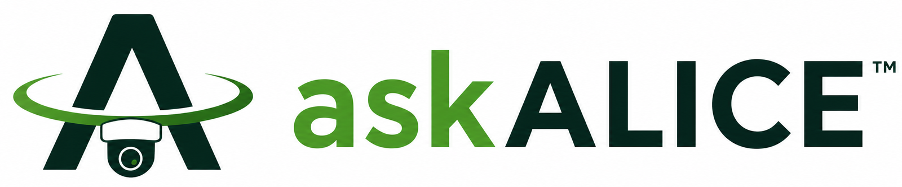
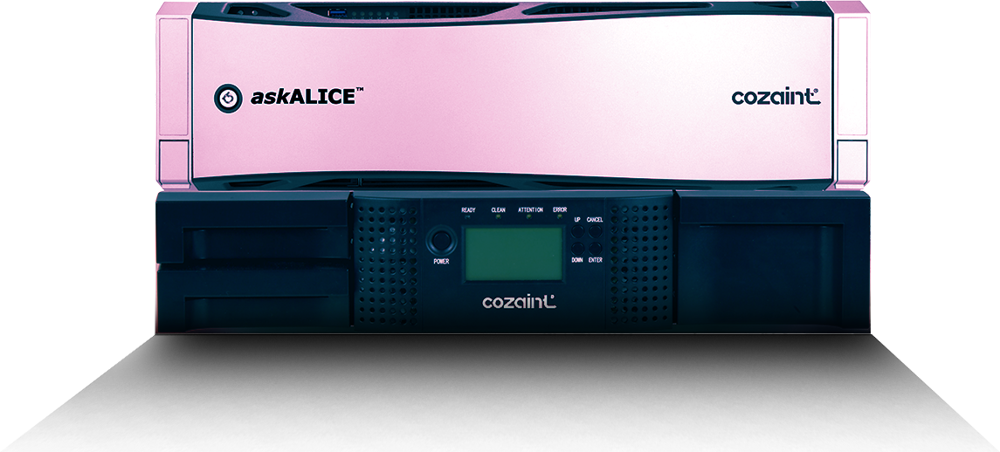

askALICE™
Stop Deleting
Your Evidence.
The two-tier storage system that keeps every camera, every frame, every day, for a fraction of what cloud or hard drives cost.

The math
Keeping everything shouldn't cost a fortune.
Take 400 cameras recording full quality for 90 days. That is about 2.25 petabytes of video. Here is what it takes to keep it.
Example from Cozaint's published storage calculation: 1080p cameras, 30 frames per second, 40% motion, RAID 6 disk system.

askALICE™
Disk speed.
Tape economics.
Today's cameras can record in stunning detail. Most organizations turn that quality down, record only on motion, or delete old footage, because storing it all costs too much. askALICE removes the reason.
- New video lands on fast disk, where operators can reach it instantly
- Original, unaltered video is copied to LTO tape automatically
- Operators scrub the normal timeline and pick any moment. They never need to know which tier holds it
- Scales from gigabytes to petabytes by adding tape, not servers
Why switch
Cloud or hard drives make you choose.
askALICE doesn't.
| Hard drives only | Cloud | askALICE | |
|---|---|---|---|
| Cost as you add cameras or days | Climbs fast. More drives, more servers, more power | Recurring fees that grow with every camera and every day | Add a tape. Pay as you grow |
| Video quality | Often turned down to save space | Often limited by upload bandwidth | Full resolution, full frame rate, no added compression |
| How long it lasts | Drives need replacing every few years | Only as long as you keep paying | Tape rated for 30+ years on the shelf |
| Ransomware | Reachable from the network | Reachable from the network | Air-gapped once written to tape |
| Finding old video | Easy, until it has been overwritten | Slow to download in volume | Same timeline, any day you kept |
Where it matters
The people who can't afford to lose footage
already know why.
A city that had to keep a year
California requires some government video to be kept for at least a year. A treatment plant with more than two dozen cameras needed to meet that on a city budget, and review any day on demand.
“We needed to upgrade our Security Surveillance system at our water treatment plant and since we have worked with several different systems, we knew what we liked and what we didn’t like. It is always difficult to find a system that fits within our budget and meets our long-term retention requirements. Cozaint’s askALICE has been an ideal fit for our surveillance recording needs and our budget.”
A restaurant facing a claim from months ago
Slip-and-fall and food-poisoning claims often arrive months after the event. Long retention shows exactly what happened.
“But we do get the occasional claim that something terrible happened and we are presented with a baseless lawsuit. We have been getting more of these claims where the proposed action occurred 90-days ago, or more.”
Hollywood keeps every take
Film studios store every frame on LTO tape, and insurers require it. Surveillance has the same video problem, and askALICE brings the same proven answer.
Read more customer testimonials →
Every day you wait, another day of footage is overwritten.
You can't get yesterday's evidence back. Tell us how many cameras you run and how long you need to keep video, and we'll show you what it would cost.